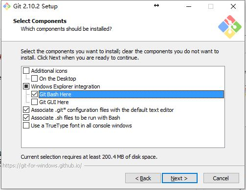
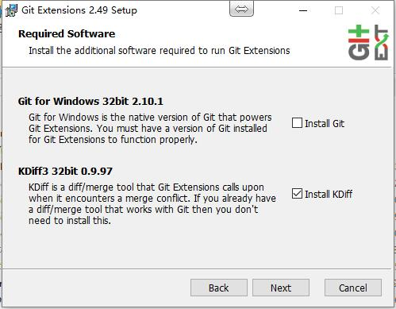
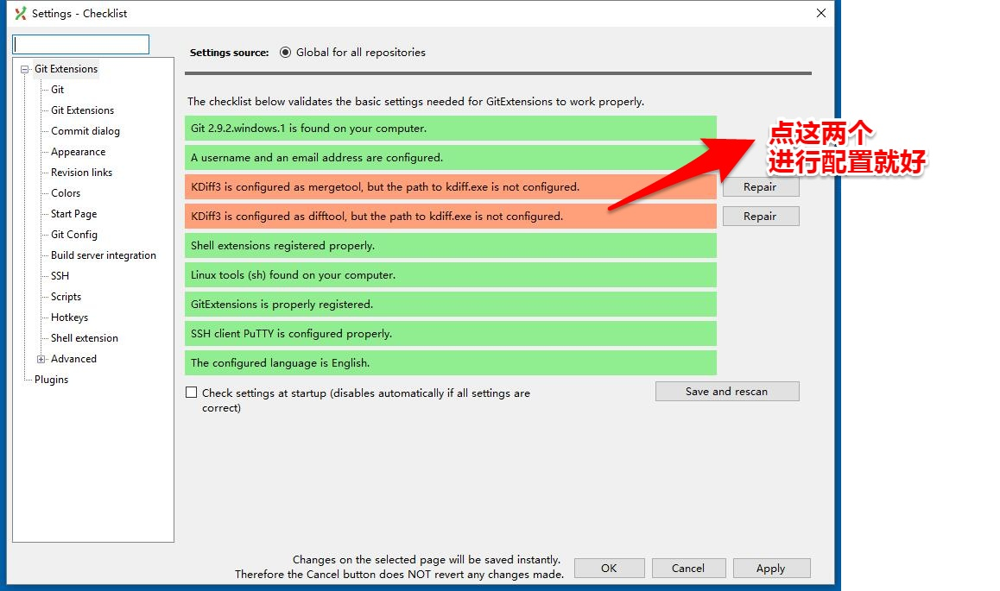
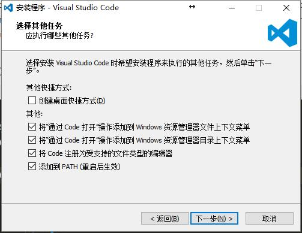
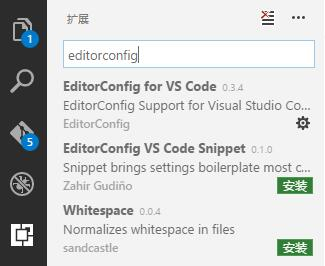
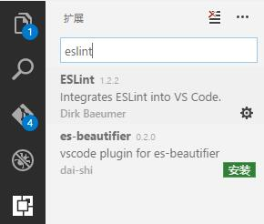

这两天新换了个电脑，回想以前自己安装前端环境的迷茫，忽然想写一个前端环境的安装与配置文档；
git 和 git GUI
git
1.已有 Git?
- 在 bash 中查看 git 版本(Windows)。
- $ git --version
2.下载
下载 git 会自动检测你的操作系统和位数，提供下载的安装包。
3.安装
重要：保持 git Bash Here 选中。

其他步骤可以保持默认选项。
4.设置信息
可以设置提交所有仓库时使用的用户名和邮箱
$ git config --global user.name "Your Name"
$ git config --global user.email yourName@Email.com
5.完成
在 bash 中查看 git 版本
$ git --version
git GUI
git 提供了命令行操作的方式，对于复杂的操作，还是有一个趁手的可视化工具为上。
目前可用的 git GUI 工具有Git Extensions 和 SourceTree。其中 SourceTree 免费试用 30 天，试用结束后可以通过注册账号继续使用，SourceTree 也提供了 Mac 客户端。本文主要介绍 Git Extensions 的安装和配置，SourceTree 同理。
- 下载
- 安装
在这一步时，可以一并安装 KDiff 3.
如果你下的安装包里没有kdiff，可以自己下一个，记住安装路径（把kdiff3.exe的路径配在Git Extension全局配置里就好）。
3.设置
完成安装后，还需要进行设置。
如果在安装 git 后不设置用户名和邮箱，第二行应该会呈现红色。在这里配置，也是一样的。

Node.js 的 release 规则是按月份 release，所以我们只需要用相对稳定且带有 LTS（长期维护）的版本即可
- $ node -v
下载
可以在这个地址下载 Node.js 6.x 版本，一般使用最后一个版本。对于 Windows 系统来说下载 .msi 文件安装即可。
安装
执行安装包安装即可，建议安装路径中不要包含中文，配置均可默认。
如果安装中报出 2502 或 2503 错误，需要将安装包移动到
C:\Windows\Installer然后使用管理员模式的 powershell 或 cmd 执行文件。结束
在 bash 中查看 Node.js 版本
$ node -v
cmd里 node --version也可以查看安装版本
npm
npm 是 Node.js 的包管理工具，安装 Node.js 时会被一并安装（没关闭 npm package manager 的情况）。
升级 npm
但自带安装的 npm 版本过低(2.15)，需要进行升级。
在除 Windows 以外的系统上升级
$ npm install -g npm@latest在 Windows 上升级
在 Windows 上升级需要借助一个模块：npm-windows-upgrade。
注意：在 Windows 上升级 npm 需要使用管理员模式的 powershell 执行以下的命令。
设置
normalSet-ExecutionPolicy Unrestricted -Scope CurrentUser -Force normal安装升级需要的模块
normalnpm install --global --production npm-windows-upgrade normal使用模块，将 npm 升级到 3.10.9
normalnpm-windows-upgrade --npm-version 3.10.9 normal完成
查看 npm 版本，与升级目标一致就成功啦。
normalnpm -v normal
或者cmd下 npm --version
安装常用模块
有一部分模块是常用的，且需要进行全局安装，这些模块可以提前一次性安装。
$ npm install -g gulp babel-cli http-server第一次项目里gulp watch时，如果失败了，运行 npm i 或者npm install babel-cli -g
编辑器
在开发中有一个趁手的编辑器（No IDE）可以保证你不犯特别低级的错误，还可以使你的代码风格与团队保持一致。
推荐使用 Visual Studio Code 写 Node.js 和前端代码。
安装
下载
在这里下载 VSCode
安装
保持“其他”中的选项选中。

3.完成
在 运行(Win+R) 中输入 Code 或点击桌面上的图标打开 VS Code。
配置
插件
VSCode 可以安装一些插件，配合项目中的配置文件可以使文件属性与团队保持一致（如：文件末尾保持空行，使用哪个平台的行结束符等）。
- 在左侧选择扩展，搜索
editorconfig，安装EditorConfig for VS Code。
 - 搜索
eslint，安装ESLint - 